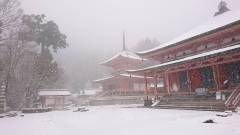
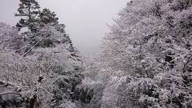

|
昼過ぎまでどこかへ寄ってから帰ろうと思い、比叡山に向かうことにした。
駅のロッカーに荷物を置いていったが、ほぼ全てのロッカーが空いていた。
京都駅から20分ほどで琵琶湖のほとり。ここから歩き始める。
ケーブルカーで登るのが一般的らしいが、行きは歩いて登ることにした。
早朝ということもあってか、延暦寺到着まで人っ子一人見かけなかった。昨日に続いて動物がちょっと怖い。
朝日に輝く木々が美しく、歩いて暑くなってきたので上着を脱いだりしていたが、山の中腹頃から木の上にかかっていた雪がパラパラ落ちてくるようになり、
延暦寺に着く頃には完全に雪になった。標高差はそれほどではなかったが、ここまで様子が一変するとは。
趣ある雪の延暦寺をしばらく観光。自分が突いた鐘の音が響き渡るのをじっと聞き入る。
本堂は大改築工事中で外観はまったくわからなかったが、参拝はできた。
| 阿弥陀堂・東塔 | 中央正面に琵琶湖があるらしい |
|  |
 |
それなりの服装で来ていたが、さすがにこの雪で寒すぎる。
震えながらケーブルカーで下山。
京都駅に戻って新幹線で帰宅。やはり空いていて楽だけど、この状態が続いても困る。
|